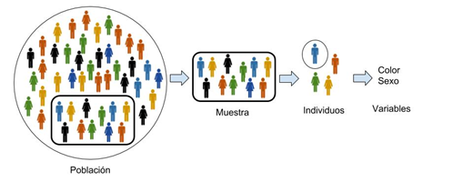

Introducción
📂 Conceptos elementales
👥 Población
Es el conjunto total de elementos sobre los que se realiza el estudio. Es decir, es nuestro universo de datos completo.
📍 Ejemplo: Todos los suscriptores de un canal de YouTube.
👤 Individuo
Cada uno de los elementos de la población. Es la unidad mínima de información que podemos analizar.
📍 Ejemplo: Un solo usuario con su ID único.
🧪 Muestra
Subconjunto de la población que se elige para el estudio, es decir, la parte seleccionada de la población. Debe ser representativa para que nuestras predicciones sean fiables y sin sesgos.
📍 Ejemplo: 1.000 usuarios elegidos al azar para una encuesta rápida.
📊 Variable Estadística
La propiedad que medimos en cada individuo. Es el dato específico que buscamos recolectar (texto o número).
📍 Ejemplo: Tiempo de visualización, dispositivo de conexión o edad.
